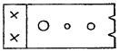

방사선비파괴검사산업기사 (2019-03-03 기출문제)
1과목: 비파괴검사 개론
1. 와전류탐상시험에서 시험주파수 선정 시 고려해야 할 요소와 가장 거리가 먼 것은?
- 표피 효과
- 프로브의 형태
- 프로브의 속도
- 코일임피던스 특성
(정답률: 60%)

2. 인간의 가청범위를 넘는 주파수를 초음파라 할 때 약 몇 kHz 이상의 주파수를 초음파라 하는가?
- 20
- 200
- 1000
- 2000
(정답률: 65%)
3. 용접부의 내부 블로홀(기공)을 검출하는데 가장 적합한 검사방법은?
- 방사선투과검사
- 와전류탐상검사
- 침투탐상검사
- 자분탐상검사
(정답률: 84%)
4. 비파괴검사의 필요성으로 보기 어려운 것은?
- 제작공정 과정을 개선
- 제작공정 중 불량을 제거
- 구조물의 파괴를 미연에 방지
- 결함이 검출되지 않는 무결함 제품을 생산
(정답률: 70%)
5. 자분탐상시험법에서 자력선의 성질을 설명한 것 중 옳은 것은?
- 자력선의 간격이 촘촘할수록 자계의 세기가 세다.
- 자력선의 방향은 자계방향과 수직이다.
- 자력선의 간격이 촘촘할수록 자게의 세기가 약하다.
- 자력선은 도중에 나누어지며 21개의 자력선이 서로 만난다.
(정답률: 73%)
6. 다음 중 베어링 합금으로 사용되는 베빗메탈(babbit metal)의 합금 성분이 아닌 것은?
- Sn
- Pb
- Sb
- Cu
(정답률: 50%)
7. 분말야금(powder metallurgy)법에 대한 설명으로 틀린 것은?
- 다공질 금속재료를 만들 수 있다.
- 제조과정에서 용융점까지 온도를 상승시켜야 한다.
- 최종제품의 형상으로 제조가 가능하여 절삭가공이 거의 필요 없다.
- 용해법으로 만들 수 없는 합금을 만들 수 있고 편석, 결정립 조대화의 문제점이 적다.
(정답률: 53%)
8. 열간가공(hot working)에 대한 설명으로 틀린 것은?
- 방향성 있는 주조조직이 제거된다.
- 재결정온도 이하에서 처리하는 가공방법이다.
- 합금원소의 확산으로 재질의 균일화가 가능하다.
- 가공완료온도가 너무 높으면 결정입자가 조대하게 된다.
(정답률: 73%)
9. 다음 중 체심입방격자(BCC)의 결정구조를 갖는 금속은?
- Ag
- Ni
- Cr
- Al
(정답률: 71%)
10. 조성이 Al-Cu-Mg-Mn이며, 고강고 Al합금에 해당되는 것은?
- 실루민(Silumin)
- 문쯔메탈(Muntz metal)
- 두랄루민(Duralumin)
- 하이드로날륨(Hydronalium)
(정답률: 91%)
11. 탄소강은 보통 200~300℃에서 연신율과 단면수축률이 상온보다 저하되어 단단하고 깨지기 쉬운 상태가 되는데, 이와 관련된 것은?
- 청열취성
- 상온취성
- 고온취성
- 저온취성
(정답률: 64%)
12. 철광석을 용광로 내에서 코크스로 환원시켜 제련시킨 것은?
- 순철
- 강철
- 선철
- 탄소강
(정답률: 62%)
13. 강에 합금원소를 첨가하면 나타나는 효과가 아닌 것은?
- 소성가공성을 감소시킨다.
- 합금원소에 의해 가지를 강화한다.
- 결정립의 미세화에 따른 강인성을 향상시킨다.
- 변태속도의 변화에 따른 열처리 효과를 향상시킨다.
(정답률: 76%)
14. 초저온용으로 사용할 수 없는 재료는?
- Al합금
- 순 Cu
- 저탄소강
- 18-8 스테인리스강
(정답률: 62%)
15. 구상흑연주철의 흑연구상화제가 아닌 것은?
- Mo계 합금
- Mg계 합금
- Ca계 합금
- 희토류 원소계 합금
(정답률: 60%)
16. 피복 아크 용접에서 피복제의 역할이 아닌 것은?
- 아크를 안정시킨다.
- 전기 절연 작용을 한다.
- 스패터의 발생을 많게 한다.
- 용착금속의 냉각속도를 느리게 한다.
(정답률: 82%)
17. TIG용접에 사용되는 전극의 조건으로 틀린 것은?
- 고용융점의 금속
- 열전도성이 좋은 금속
- 전기 저항률이 많은 금속
- 전자 방출이 잘되는 금속
(정답률: 76%)
18. 용접 후 일어나는 용접변형형을 교정하는 방법이 아닌 것은?
- 노 내 풀림법
- 박판에 대한 점 수축법
- 가열 후 해머링하는 방법
- 절단에 의하여 성형하고 재용접하는 방법
(정답률: 62%)
19. 피복 아크 용접에서 용접전류 200A, 아크 전압 25V, 용접속도 15cm/mim일 때 용접입열은 몇 J/cm인가?
- 800
- 1250
- 7200
- 2000
(정답률: 50%)
20. 각 층마다 전체의 길이를 용접하면서 쌓아올리는 용착법은?
- 전진법
- 후퇴법
- 스킵법
- 빌드업법
(정답률: 88%)
2과목: 방사선투과검사 원리 및 규격
21. 방사성 물질 1Ci에서 붕괴되는 량은?
- 3.7×107 dps
- 3.7×109 dps
- 3.7×1010 dps
- 3.7×1019 dps
(정답률: 62%)
22. X선 투과시험에 수반되는 산란방사선의 선량률에 관계되는 내용과 가장 거리가 먼 것은?
- 관전압
- X선 발생장치
- 필름의 종류
- 시험체의 재질
(정답률: 48%)
23. Ir-191에 열중성자를 흡수시키면 무엇으로 변하는가?
- Ir-190
- Ir-192
- Os-192
- Pt-192
(정답률: 78%)
24. 다음 중 방사선 가중치(Radiation weighting factor)가 가장 높은 것은?
- 알파선
- 베타선
- 감마선
- 엑스선
(정답률: 64%)
25. 방사선작업종사자의 피폭선량은 연간 50mSv를 초과하지 않도록 규정하고 있다.올바른 선량의 용어는?
- 등가선량한도
- 유효선량한도
- 예탁선량한도
- 집단선량한도
(정답률: 71%)
26. 선원-필름간 거리를 감소시켰을 때 다음 중 어떠한 경우에 처음과 같은 질의 투과사진을 얻을 수 있겠는가?
- 노출시간을 증가시킨다.
- 속도가 빠른 필름을 사용한다.
- 선원의 크기가 작은 것을 사용한다.
- 연박증감지를 두꺼운 것을 사용한다.
(정답률: 66%)
27. 방사선투과시험의 장ㆍ단점에 대한 설명으로 옳지 않은 것은?
- 시험체의 미세한 조성 변화를 검출할 수 없다.
- 내부결함을 검출할 수 있다.
- 실시간법을 이용하면 현상이나 필름판독은 불필요하다.
- 방사선빔에 평행하지 않은 균열을 쉽게 검출할 수 있다.
(정답률: 53%)
28. 다음 중 X선과 γ선의 공통점이 아닌 것은?
- 전자파 방사선
- 질량이 없음
- 이온화 방사선
- 입자선방사선
(정답률: 45%)
29. Ir-192 감마선원의 강도가 40큐리(Ci)일 때 노출시간이 2분이었다면 동일 조건에서 75일이 경과한 후 노출시간은?
- 4분
- 8분
- 12분
- 16분
(정답률: 72%)
30. 다음 중 재료의 두께, 전압 및 노출시간의 상관 관계를 표시하는 그래프는?
- 노출특성곡선
- 필름특성곡선
- H & D 도표
- 노출도표
(정답률: 75%)
31. 다음 중 인체에 대한 방사선 피폭을 줄이기 위한 방법으로 적절하지 않은 것은?
- 차폐체를 이용한다.
- 방사선원을 제거한다.
- 방사선원을 분쇄한다.
- 방사선구역으로부터 벗어난다.
(정답률: 90%)
32. 방사선작업종사자가 착용하는 개인선량계의 종류가 아닌 것은?
- 감광 또는 혹화작용 등 화학작용을 이용한 선량계
- 형광 또는 섬광 등 여기작용을 이용한 선량계
- 측정결과를 즉시 확인할 수 있는 능동형 선량계
- 분자구조 결함 등 결함유발을 이용한 선량계
(정답률: 48%)
33. 원자력안전법 시행령에서 정의하고 있는 “선량한도”란?
- 외부에 피폭하는 방사선량과 내부에 피폭하는 방사선량을 합한 피폭 방사선향의 상한 값
- 전신, 수정체, 손, 발 및 피부에 피폭하는 방사선량을 합하여 허용할 수 있는 상한 값
- 방사선작업종사자가 5년간 피폭을 허용할 수 있는 유효선량한도
- 일반인에게 허용할 수 있는 1년간의 등가선량한도
(정답률: 64%)
34. 강 용접 이음부의 방사선투과 시험방법(KS B 0845)에서 모재의 두께가 45mm일 때 투과사진상의 결함이 제2종인 슬래그혼입 18mm일 경우 홈(결함) 분류는?
- 1류
- 2류
- 3류
- 4류
(정답률: 56%)
35. 방사선투과검사 장치의 사용전 검사 항목으로 틀린 것은?
- 선원용기 점검
- 운반차량 점검
- 안전장치 점검
- 선원저장기구 점검
(정답률: 72%)
36. 강 용접 이음부의 방사선투과 시험 방법(KS B 0845)에 의거 강관 원둘레 용접이음을 내부선원 촬영으로 할 때 높은 검출감도를 필요로 하는 경우 상질의 적용으로 올바른 것은?
- P2급
- P1급
- A급
- B급
(정답률: 40%)
37. 강 용접 이음부의 방사선투과 시험 방법(KS B 0845)에 의하여 강판의 맞대기 이음 용접부를 방사선투과검사 할 때, 모재의 두께가 10.0mm 초과 12.5mm이하이고, 상질은 A급일 경우 계조계의 값은 얼마 이상이어야 하는가?
- 0.062 이상
- 0.035 이상
- 0.020 이상
- 0.010 이상
(정답률: 34%)
38. 보일러 및 압력용기에 대한 표준방사선투과검사(ASME Sec.V, Art.22 SE-1025)에서 그림과 같은 형태의 투과도계를 사용해야 하는 경우로 옳은 것은?

- Group 1 물질(탄소강)
- Group 1 물질(알루미늄브론즈)
- Group 1 물질(니켈-크롬-철합금)
- Group 1 물질(니켈-구리합금)
(정답률: 74%)
39. 강 용접 이음부의 방사선투과 시험 방법(KS B 0845)에서 강판의 T용접 이음부의 촬영 시 투과도계를 필름측에 두는 경우 투과 도계와 필름간의 거리는 식별 최소 선지름의 몇 배로 하여야 하는가?
- 2배 이상
- 3배 이상
- 5배 이상
- 10배 이상
(정답률: 66%)
40. 보일러 및 압력용기에 대한 표준방사선투과검사(ASME Sec.V, Art.2)에서는 후방산란선을 확인하기 위하여 납글자 “B"를 사용하는데, 이 납글자의 최소 크기는?
- 두께 1/32인치, 높이 1/3인치
- 두께 1/16인치, 높이 1/3인치
- 두께 1/16인치, 높이 1/2인치
- 두께 1/8인치, 높이 1/2인치
(정답률: 44%)
3과목: 방사선투과검사 시험
41. 방사선투과시험용 동위원소로 현재 사용하지 않는 것은?
- U-238
- Co-60
- Yb-169
- Ir-192
(정답률: 66%)
42. 철에 대해 동일한 노출조건을 얻기 위한 다른 재질의 방사선 흡수를 비교하여 노출조건을 구할 수 있는 인자는?
- 등가 인자
- 흡수 계수
- 노출 인자
- 노출 도표
(정답률: 41%)
43. 192Ir 40Ci를 가지고 주당 40시간을 작업하는 장소에서 20m 떨어진 곳에서의 선량률을 주당 30mrem 이하로 유지하고자 할 때 콘크리트 차폐는 최소 어느 정도하여야 하는가? (단, 192Ir의 콘크리트에 대한 반가층은 5cm이고, RHM은 0.55이다.)
- 31cm
- 39cm
- 43cm
- 48cm
(정답률: 43%)
44. 방사선투과검사에서 촬영의 일반 조건은 변화시키지 않고 현상시간을 증가시켰을 때 필름특성곡선의 변화에 대해 옳게 설명한 것은?
- 특성곡선이 급경사가 되고 왼쪽으로 이동한다.
- 특성곡선이 급경사가 되고 오른쪽으로 이동한다.
- 특성곡선의 형상은 변하지 않고 왼쪽으로 이동한다.
- 특성고선에 어떠한 영향도 주지 않는다.
(정답률: 56%)
45. V 개선된 맞대기용접부에 조충 용접 과잉으로 용입되어 뒷면으로 흘러내린 형상의 결함을 무엇이라 하는가?
- 오버랩(Overlap)
- 용락(Burn through)
- 융합부족(Lack of fusion)
- 용입불량(Incomplete penetration)
(정답률: 53%)
46. 자기유도형 전자가속장치로, 자석과 변압기의 결합을 이용해서 전자를 회전궤도에 매우 높은 에너지로 가속시키는 장치는?
- 동조변압 X-선 발생장치
- 선형가속장치
- 밴더그래프 발생장치
- 베타트론가속장치
(정답률: 53%)
47. 정적 및 동적 현상을 방사선의 투과로 인한 필름 등에 사진으로 만들지 않고 바로 눈이나 TV 모니터로 관찰되는 방사선투과시험법을 무엇이라 하는가?
- 중성자 래디오그래피
- 엘렉트론 래디오그래피
- 실시간 래디오그래피
- 제로 래디오그래피
(정답률: 90%)
48. 필름 입상성(film graininess)과 무관한 인자는?
- 증감지사용 유무
- 유제입도의 크기(Grain size)
- 필름 γ치(Film gamma value)
- 입사방사선의 질(Radiation quality)
(정답률: 63%)
49. 용접부의 투과사진 농도에 대한 설명에서 최저 농도는 다음 어느 부위를 말하는가?
- 중앙 용접부의 가장 낮은 값
- 중앙 모재 부위의 가장 낮은 값
- 부분적으로 가장 낮은 값
- 계조계의 가장 낮은 값
(정답률: 58%)
50. 특수방사선 투과시험방법 중 X 선상을 전자로 변환시켜 전자가 소형 형광스크린 위에 상을 만들어 내며 광학 시스템에 의해 상을 확대하여 관찰하는 방법은?
- 형광투시법(fluoroscopy)
- 파라렉스법(parallax method)
- 입체 방사선 사진법(stereo radiography)
- 상 증강법(image enhancement techniques)
(정답률: 40%)
51. 선원과 필름 간의 거리를 60cm로 하고 60초의 노출시간을 주어 양질의 투과사진을 얻었다. 기타 다른 조건을 동일하게 하고 거리를 30cm로 한다면 동일한 상질의 투과사진을 얻기 위한 노출시간은?
- 120초
- 30초
- 15초
- 240초
(정답률: 67%)
52. X선발생장치의 방사구에 부착된 필터의 가장 적합한 역할은?
- 2차 방사선을 증가시켜 X선의 강도를 증대시킨다.
- 연질방사선을 만들기 위해 파장이 짧은 방사선을 걸러 준다.
- X선의 강도를 증폭 변형시킬 수 있는 방법을 제공한다.
- 파장이 긴 X선을 제거하여 산란선의 발생을 줄여준다.
(정답률: 85%)
53. 25mm의 평판 맞대기 용접부에 대해 방사선 투과검사를 하였다. 다음 중 방사선 투과사진상에 나타나기 힘든 결함은?
- 균열(crack)
- 기공(porosity)
- 개재물 개입(slag inclusion)
- 편석(segregation)
(정답률: 73%)
54. 감마선을 사용할 경우 투과율을 변경시키는 방법은?
- 선원 방사능량 변경
- 노출시간 변경
- 선원 종류의 변경
- 선원의 개수 변경
(정답률: 50%)
55. 선원의 강도가 30Ci인 Ir-192를 사용할 때 두께가 45mm인 철판으로 차폐하면 같은 위치에서 방사선량은 처음의 몇 %로 감소하는가? (단, Ir-192의 철에 대한 반가층은 15mm로 한다.)
- 1.25%
- 3.33%
- 12.5%
- 33.3%
(정답률: 45%)
56. 현상처리 과정에서 기인된 인공결함으로 현상액의 온도가 너무 높아 필름 기저부분으로부터 감광유제가 들떠서 발생하는 의사지시를 무엇이라 하는가?
- 주름(Frilling)
- 반점(Spotting)
- 포크(Fog)
- 구겨짐표지(Crimp mark)
(정답률: 48%)
57. 연박 증감지를 사용하여 방사선 투과사진을 촬영하였다. 필름과 접촉상태가 완전하지 않은 경우 필름에 나타나는 현상으로 옳은 것은?
- 흰색 점이 발생한다.
- 황색 얼룩이 발생한다.
- 검은색 반점이 발생한다.
- 영상이 뿌옇게 흐려진다.
(정답률: 81%)
58. 방사선 투과검사 시 형광증감지는 연박 증감지에 비해 어떤 장점이 있는가?
- 노출시간을 단축시킨다.
- 산란방사선에 효과적이다.
- 영상의 선명도가 증가된다.
- 경금속의 검사에 적용이 가능하다.
(정답률: 38%)
59. 방사선투과시험 시 사용 중인 현상액에 보충액을 어느 정도까지 보충시킬 수 있는가?
- 1배
- 2배
- 5배
- 10배
(정답률: 65%)
60. X선 필름의 기저부분에 사용되는 폴리에스테르의 특성으로 옳지 않은 것은?
- 강도가 좋다.
- 투광성이 좋다.
- 안정성이 좋다.
- 물을 잘 흡수한다.
(정답률: 72%)